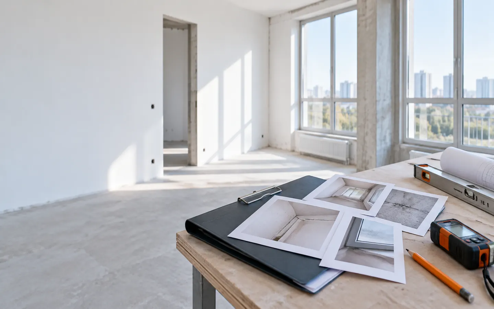
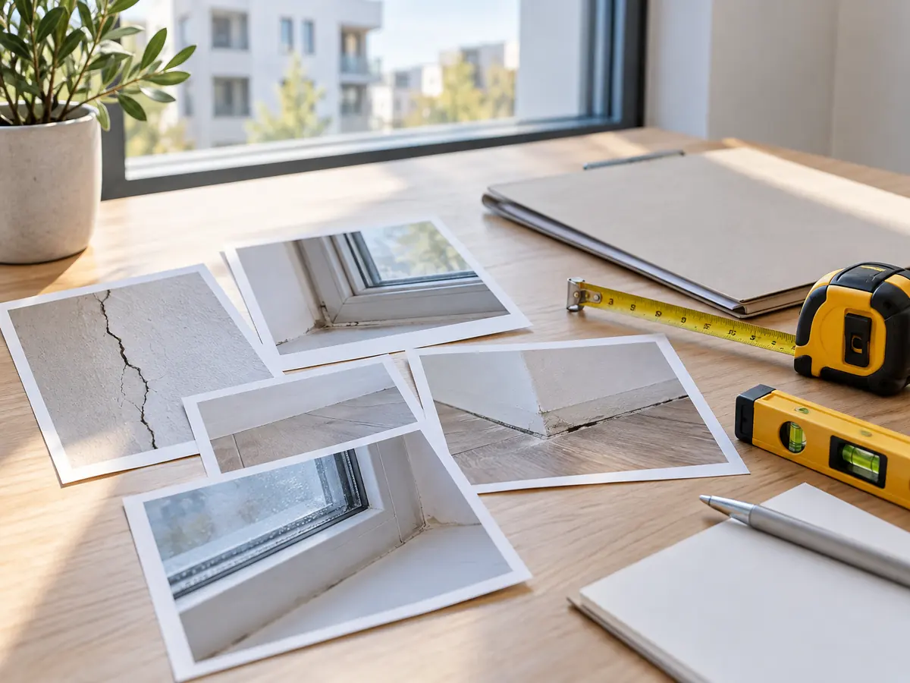
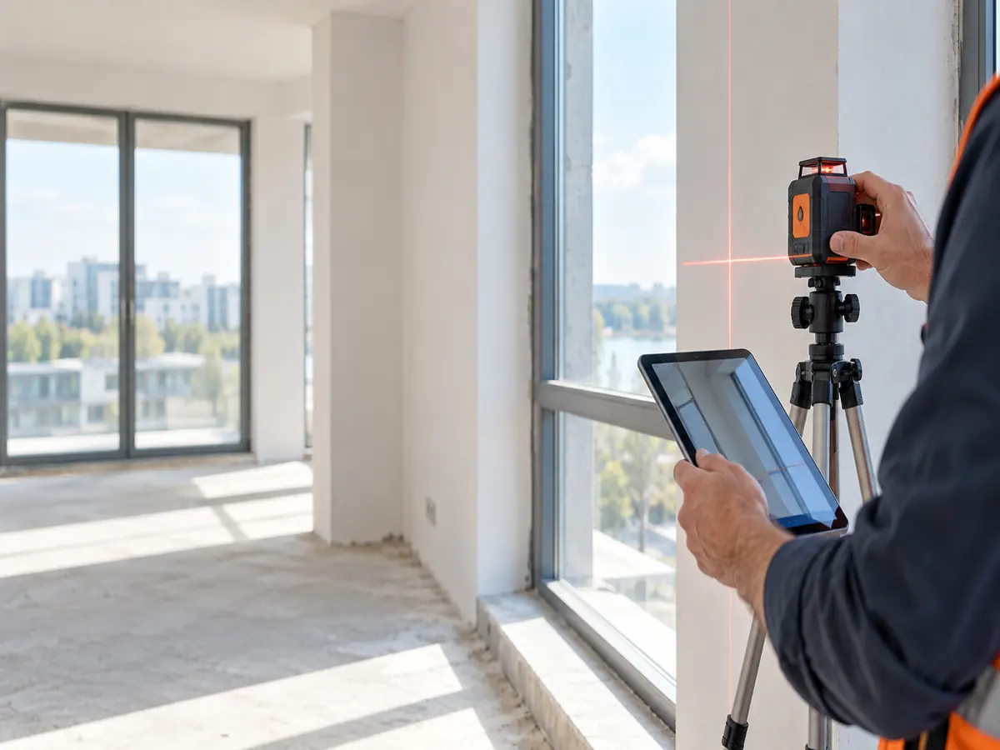

Квартира уже передана
Есть акт, фотографии, переписка или другие материалы, по которым можно восстановить состояние объекта и историю требований.
Посмотреть список материаловЕсли после передачи квартиры остались дефекты, сначала разберём документы, фиксацию и технические материалы. Затем определим, можно ли обосновать требования к застройщику и какой маршрут подходит вашей ситуации.

Обычно к нам обращаются после передачи квартиры, когда недостатки уже зафиксированы или застройщик не согласен с их составом, причиной или стоимостью устранения.
Есть акт, фотографии, переписка или другие материалы, по которым можно восстановить состояние объекта и историю требований.
Посмотреть список материаловЗастройщик может не устранить нарушения, устранить их частично или оспаривать сам факт дефектов и стоимость работ.
Как выглядит маршрутВажно понять, какие дефекты есть, почему они появились и сколько может стоить их устранение.
О строительной экспертизе
Универсального списка для каждого спора нет. Состав материалов зависит от того, что произошло с квартирой и какие требования уже предъявлялись застройщику.
Экспертиза нужна не автоматически. Она помогает установить дефекты, возможные причины их появления и стоимость устранения, если обычной фиксации недостаточно или требования оспариваются.

Маршрут зависит от документов, фактического состояния квартиры и позиции застройщика. Поэтому сначала квалифицируем задачу.
Изучаем ДДУ, акты, переписку, фотографии и вашу историю взаимодействия с застройщиком.
Определяем, каких материалов достаточно, а когда может понадобиться строительная экспертиза.
Готовим юридический маршрут и требования с учётом подтверждённых технических обстоятельств.
Если договориться не удаётся, дальнейшие действия зависят от дела, суда, застройщика и исполнения решения.
В базе компании зафиксированы показатели технической и юридической практики. Они показывают масштаб работы, но не являются гарантией результата по конкретному делу.
Для оценки именно вашей ситуации важнее не общая цифра, а документы, состояние квартиры, качество фиксации и позиция застройщика.
Для компенсации за строительные недостатки доступны разные модели. Применимость конкретной модели подтверждается после анализа документов и обстоятельств дела.
Юридическая услуга с оплатой после результата по условиям конкретного дела.
40 000 ₽ сразу, остаток — по итогу в соответствии с согласованными условиями.
Юридическая услуга. Строительная экспертиза оплачивается отдельно по тарифу.
Тариф зависит от комнатности квартиры. Оплата экспертизы — сразу.
| Объект | Стоимость |
|---|---|
| Студия или 1-комнатная квартира | 20 000 ₽ |
| 2-комнатная квартира | 25 000 ₽ |
| 3-комнатная квартира | 30 000 ₽ |
| 4-комнатная квартира | 35 000 ₽ |
После работ можно сопоставить объект с первоначальной фиксацией и отдельно зафиксировать, что исправлено, что осталось и какие новые последствия появились.
Короткие ответы помогают понять, какие данные нужны для первого разговора и почему нельзя обещать результат без анализа.
Опишите ситуацию. Уточним, какие материалы стоит прислать, нужна ли техническая экспертиза и какая модель работы может подойти.